Dan četvrti: Svako živi svoj japanski san
Danas ustali u podne. Kad neko nam otključao vrata i ulazi nam u stan. Šok. Iznenađeno nas pogleda, nakloni se i ode. Ja odmah poruku gazdi: šta je ovo?
Nije prošlo dugo, neko zvoni na vrata. Kad ono menadžer hotela i taj čovek, čistač. Menadžer kuca u telefon, prevodi i izvinjava nam se. Doneli nam prelepu kutiju sa keksićima (na slici ispod: gore, desno). Devojka sa crvenim šeširom. Crveni šešir donosi sreću. I keksići su im ukusni. Na slici je i moj omiljeni novčić sa rupicom i cvećem. 50 jena.
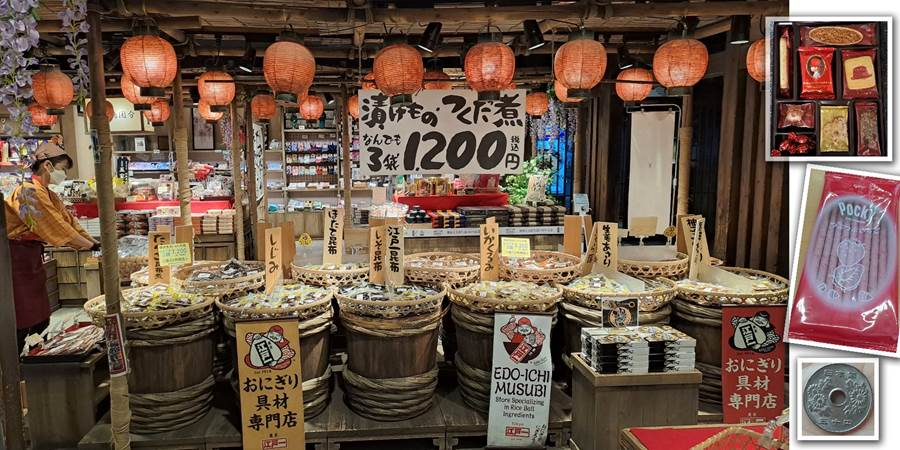Putovanja su definitivno i ljudi. Ulaze i izlaze iz naših života. Neko ostaje kraće, neko duže. Japanci će ostati kraće ali će ostaviti traga. Želela bih da živim sa ovakvim ljudima. Sve im je next level.
Danas je svako živeo svoj japanski san. Deca su bila u Akihabari, raju za mange, anime, igrice, tehnologiju. Ja sam išla po hramovima. Prvo sam išla u Kameido Tenjin. On je poznat po cveću, visterijama. Dok sam ja otišla, nije bilo ni cvetića. Al’ je lep hram. Ušuškan je među zgradama. Svuda je duvao vetar, a tu ni daška. Ima jezerce sa ribicama i kornjačama, crveni mostić. Baš vode računa o prirodi i sve im je lepo. Opet sam videla kako imaju kolica za kučiće u kojim ih guraju.
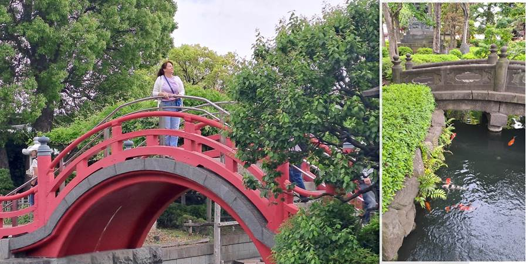Oo, pešački prelaz ne znači prvenstvo. Ja zagazila jedan mi trubio. Verovatno nije Japanac. Mada me niko nije pustio da pređem. Kasnije na nekom mikro prelazu gde sam tek prilazila stao auto da me propusti. Naknadno sam utvrdila da je bio semafor koji nisam videla tamo gde me nisu propuštali.
I ljudi se raznoliko ponašaju. Gomila te ignoriše. Npr. sami smo na ulici, idemo jedno drugom u susret. Ja: “Sumimasen”. Ignore. Unesem mu se u facu, “Sumimasen”. Ni ne trepne. Samo skrene od mene. Vrlo često. Ali ako stane, vodiće te i 15 minuta do mesta za koje si pitao. Verovatno, ako žure, te ni ne pogledaju što je za naše standarde vrlo grubo a ako ti stanu daju sve od sebe da ti pomognu.
Savršen je hladan matcha čaj iz automata za osveženje.
Na autobuskoj stanici gledam kad stiže autobus a jedna žena mi prstima pokazuje 4. Pokazuje mi prstima 4 a ja reko na tečno japanskom za oko četiri minuta, dolazi autobus. Al se iznenadila i nasmejala.
Ne znaš čije je veće iznenađenje. Njihovo kad ja progovorim na japanskom ili moje kad oni progovore na engleskom.
Ona i baka su ušle u taksi, vrata širom otvorena, daleko od bake. Ja da priđem da zatvorim vrata a ona se sama zatvorila. Vrata kao kod naše Dačije Logan, ko Dambovo uvo. Taksi u koji smo mi ulazili su takođe imali vrata sa automatskim otvaranjem i zatvaranjem ali su bila klizna. Dakle izađe se iz taksija i vrata se ne diraju. Ili se uđe u taksi bez zatvaranja vrata. Automatika odradi.
Vozovi im idu valjda na minut. Autobus čekam, kasni.
Prišla mi jedna žena što deli letke i pitala me da li živim u Japanu. Ja sam je razumela. Proćaskale. Rukama, nogama i sa par mojih japanskih reči. Nudila mi da idem na neki koncert u junu. Otud pitanje da li živim tu, hoću li biti tu i u junu.
Na novčićima cveće i hramovi. Omiljeni su mi oni sa rupicom i cvetićima, 50 jena.
U autobusima uzdignuće da se odmore noge. Kasnije sam utvrdila da je to ipak bio samo točak. U gradu ama baš nigde klupa. U velikom broju oblasti ni kafića da se sedne. Šetaj Sandra. Juče 29000 koraka. Kakav ritam! A kad srećni ugledate stepenice i pomislite da biste mogli da se odmorite, piše ‘do not sit’.
Tokio nije grad. Tokio je megalopolis. Najveći na svetu.
U Japanu je vrlo popularno da se u blizini hramova iznajme kimona i da se slika. U Senso ji hramu ima dosta onih debelih narandžastih riba, koi šarana. Ima i vodopad. Mostić.
Tražila sam da mi naslikaju pečate hrama za Kristinu i ona se obradovala.
Ljudi vuku rikšu.
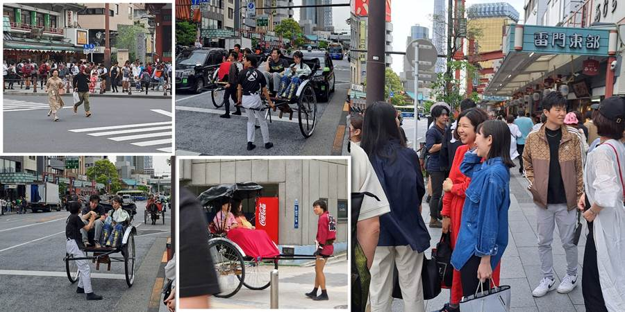Pitala sam taksistu na japanskom kako se zove reka: Kawano namae wa nan des ka. Zove se Sumida.
Ispred Senso ji hrama ima pešačkih prelaza u više smerova nego na čuvenoj Shibuya crossing. Tako smo nas tri drugarice iz osnovne (VLČ tim, Vaki, Leta i Čoma) kad smo išle iz Osnovne škole “Sonja Marinković” i prelazile malenu raskrsnicu popreko, kao prave bitangice, govorile da idemo ko Japanci, a eto ja sada u Japanu, sa Japancima, prelazim ukoso raskrsnice, najregularnije.
Prišla sam nekim curicama u kimonu i na japanskom ih pitala mogu li da ih fotografišem, a one pukle od smeha i rekoše: Mi smo iz Koreje.
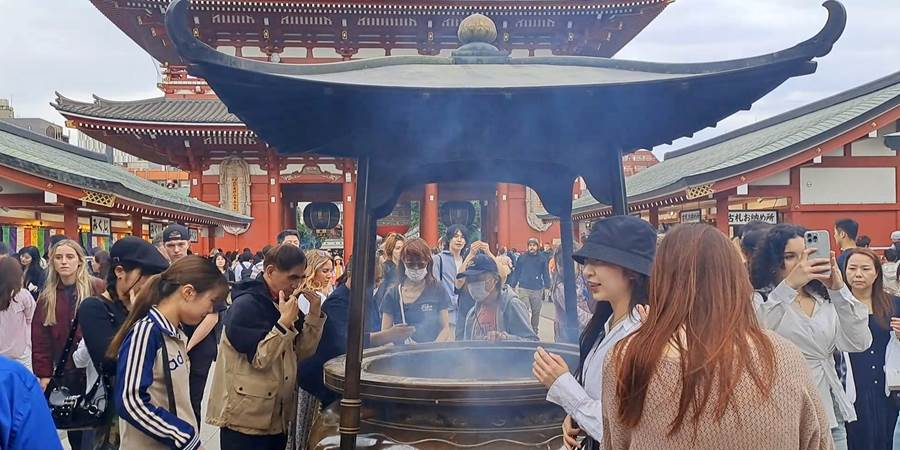 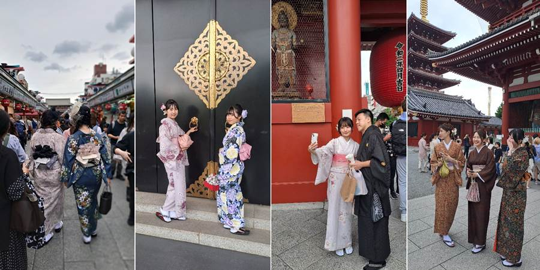 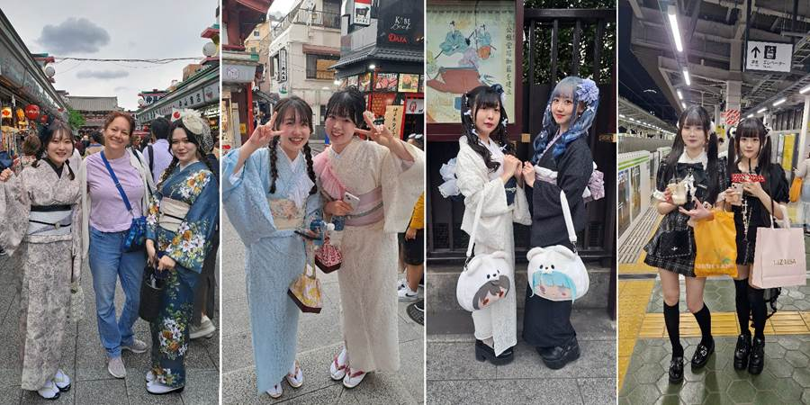Često su u izlozima napravljene vrlo verne imitacije jela za lakši odabir. To je posebna umetnost modeliranja. Postoje i časovi za strance kao atrakcija.
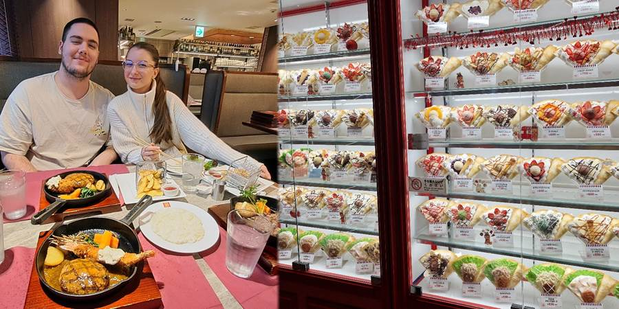Svuda je sudar tradicionalnog i modernog.
Videli smo beskućnike. Kod železničke stanice i kod reke. Nisam mogla da verujem da Japan to nije rešio. Možda njih 5 beskućnika, ali opet.
Ne mali broj ljudi zaspe u vozovima. Ne znam da li promaše svoju stanicu.
Popodne sam krenula u Hie shrine sa crvenim tori kapijama. Izgubila se skroz na skroz dok sam tražila stanicu i došla u interesantan deo Akihabare. A tamo žurka. Gomila devojčica skoro jedna do druge obučene kao seksi sobarice, zovu u kafiće gde izigravaju služavke i služe piće i hranu. Srednjoškolke a matori Japanci se pale da im kažu: “Izvolite, gospodaru”. Često su i zabavljačice, sviraju, pevaju.
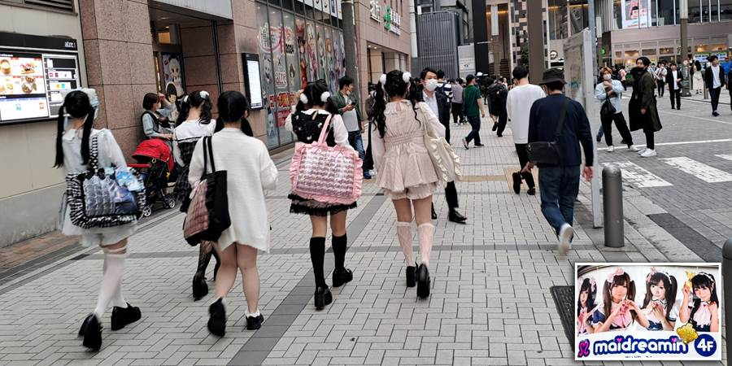Ne žele da se slikaju na ulici gde pozivaju u kafić. „Ne“ im je kad prekrste podlaktice.
Uglavnom, pokušam ja da zaustavim bar njih petoro da pitam za pravac, jer mi je internet otišao sa Petrom, a da su pokriveni wifijem je mit. Svi me ignorišu. Naiđem na jednog debeljuškastog dečka i on me 15 minuta vodio. Ono što je Gugl map rekao 9 minuta do stanice ispalo je sat vremena jer sam išla okolo naokolo. Baš mi je i drago jer sam lepo obišla i taj deo Akihabare. Na ulici prodaju stare fotoaparate. Kaže dečko da ih Japanci vole. Generalno vole retro. E, sa njim sam se baš fino izdivanila na japanskom.
Hie shrine je bukvalno usred nebodera. Lep je i lepe su mu crvene kapije. Stigla do kapija, nigde nikog. Super za slikanje, ali ko će da me slika? Kud ne ponesoh stativ i okidač što mi Luka dao. Mislila sam da se nećemo razdvajati i da ću imati svog ličnog fotografa. Namestim ja telefon za snimanje kad naiđu dvoje. Lepo me slikali. Ali da ne propadne trud oko nameštanja, usnimim se ja i sama. Dole opet neko naišao, a ja se setila mog crvenog kišobrana kojeg sam ponela posebno za ovu priliku jer sam na Instagramu videla baš lepe slike sa crvenim kišobranom i crvenim kapijama. Slike sa crvenim kišobranom su mi smešne.
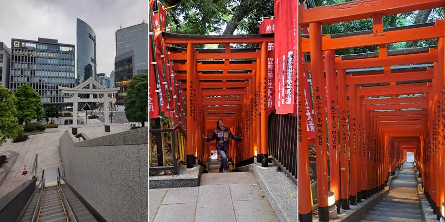Taman kada budem preponosna kako se snalazim u prevozu, ja se izgubim.
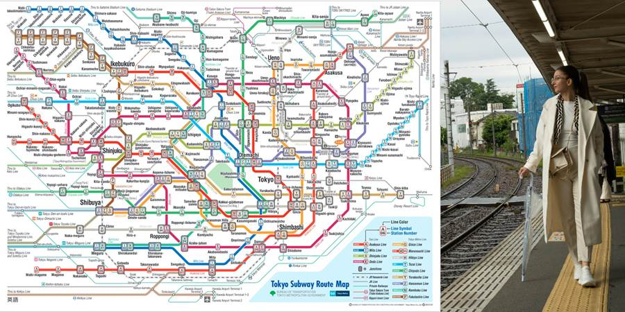Sad sam u metrou. Promašila sam stanicu gde mi je jedan Japanac rekao da treba da siđem. Vratim se, kad rekao mi je pogrešnu stanicu. Tako sam odustala od Tokyo Towera i hajde kući. Pokupovala sam deci da jedu u 7 Eleven, omiljenoj prodavnici. Napravila im tamo i smutije od zamrznutog voća. Oni su taman stigli i bili su gladni. Dogovaraju se da idu u radnju, a ja sam ih preduhitrila i stigla sa svim što treba. Bilo mi je drago.
Luka je pitao na japanskom gde je WC. Toiru wa doko desu ka?
Uveče smo opet išli do Shinjukua. Išli smo u restoran gde služe roboti, ali su oni pre par minuta prestali da primaju porudžbine. Dali su nam da popričamo i poigramo se sa robotima, i đuskamo sa njima. Slatki su. Zovu se Pepper Parlor.
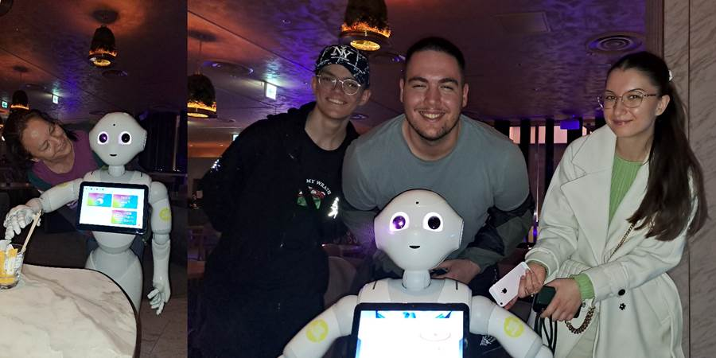Pošto smo ostali kratki za palačinke na koje smo se naoštrili, otišli smo u čuveni 7 Eleven i kupili sendviče sa slatkim kremom i besprekornim jagodama i breskvama. Raskrsnicu smo prešli bar 5 puta, snimajući se.
Kristina baš voli kuvan kukuruz. I našla ga je na vending mašini.
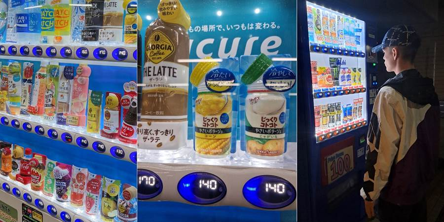Malo je biciklista. Jedva da sam videla par. Ravno je a skoro da i nema biciklističkih staza.
Dečko što me vodio, pitao odakle sam. Reko “Serbia”. On: Srbija, jesi iz Beograda?
Trgovac sa riblje pijace pitao odakle smo, mi Srbija, on na tečno srpskom: “Dobar dan”.
I mahom znaju da je Srbija bila u Jugoslaviji. I znaju za ratove. Eto, odakle znaju za Srbiju.
Ne propustite sledeću avanturu!
Kad Sandra krene u novi kraj sveta, vaš inbox prvi sazna. Prijavite se i stižu vam sve nove priče mejlom.